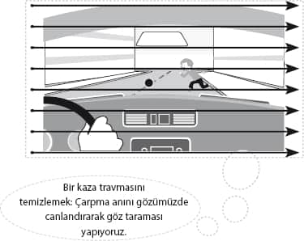
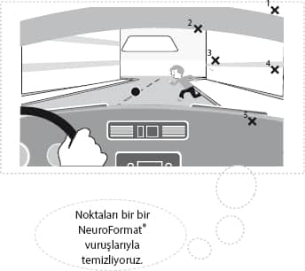
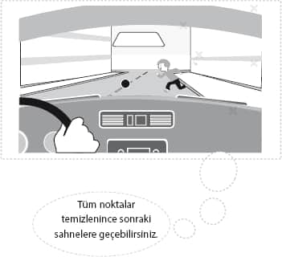
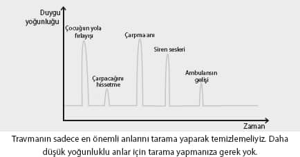
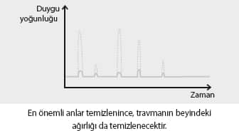

Aşağıda sizinle paylaşacağım Hikâye Tekniği sizin NeuroFormat® sistemini kullanarak geçmiş hayatınızı temizleyeceğiniz en önemli silahınız olacak. Geçmişte yaşadığınız birçok olayı bu tekniği kullanarak temizleyebilir, o olayların üzerinizdeki kötü etkilerinde kurtulabilirsiniz.
NeuroFormat® Hikâye Tekniği
Yapacağımız şey oldukça basit. Hikâyeyi anlatıp yaşarken NeuroFormat® tekniğini uygulamak!
1- NeuroFormat® duruşuna geçin. Sizi rahatsız eden bir olayı tekrar yaşayacaksınız. Gözlerinizi kapatın, üzücü olay başlamadan 30 saniye öncesine gidin. O anı, aynı şekilde yaşamanızı istiyorum. Kendi bedeninize girin, kendi gözlerinizde o ana geri dönün (eğer siz bir uçaksanız, uçağı dışarıdan görmeyin, kokpitten dışarıyı göreceksiniz) ve anlatmaya başlayın.
2- Sesli olarak, sanki karşınızda birisi varmış gibi en başından başlayın. Hikâyenin özellikle başını detaylı tutmaya çalışın. Mekânı, zamanı, insanları detaylandırın. Kuracağınız her yeni cümle, vereceğiniz her yeni detay, beyninizde problemle ilgili farklı bir yeri, bölgeyi harekete geçiriyor olacak.
3- Duygusal olarak yoğunlaştığınızı hissettiğiniz bir noktaya geldiğiniz zaman, hikâyede odaklandığınız, sizi üzen unsurun ve vücudunuzda yarattığı kötü duygunun farkına varın. Sizi üzen bir görüntü, karşınızdaki insanın bir bakışı, sesi, söyledikleri gibi birçok şey olabilir.
4- Şimdi gözleriniz kapalı bir şekilde tarama yapacaksınız. Şu an oradasınız, yaşadığınız olayı ilk kez yaşıyorsunuz. O an ne görüyorsanız, bulunduğunuz ortamda sol üst köşeden başlayarak ortamı tarayın, sizi üzen düşünceler, sesler, görüntüler hâlâ aklınızdayken. Baktığınız bir noktada bu durum sizi daha fazla üzecek. O noktayı bulun...

5- Olumsuz duyguyu hissettiğiniz göz pozisyonunu bulduğunuz an, sizi üzen her şeye odaklanarak özel noktanıza vurun. Amacımız, konsantre olduğunuz, sizi üzen şeylere karşı tamamıyla hissiz duruma gelmeniz. Duygu azaldığı sürece, “özel noktanıza” vurmaya devam edin. “Kilidi açma” prosedürünü hiç uygulamayabilirsiniz, ancak kötü duygu hiçbir şekilde azalmıyorsa, dönüp kilidi açın.
6- İlk göz pozisyonu temizlenince, yeniden göz taraması yapacaksınız. Yine sizi üzen şeylere konsantre olarak, yeni göz pozisyonları bulacaksınız. Bulduğunuz göz pozisyonlarını, yukarıdaki şekildeki özel noktanıza vurarak temizleyin.

7- Duygu temizlenince, hikâyeyi biraz başa alın. Sizi üzen konunun üzerinden tekrar geçin. Hiçbir şey hissetmez hale geldiyseniz, hikâyenin bu bölümünü geçebiliriz.

8- Bu bölümünü çözdüğünüzü düşünüyorsanız, hikâyeyi bir sonraki duygu yoğunluğu hissettiğiniz bölüme kadar anlatmaya devam edin. Duygu hissettiğiniz an durmalı ve sizi neyin üzdüğünün, kızdırdığının, utandırdığın farkına varmalı ve yine uygulama yapmalısınız.
9- Hikâyenin baştan sona üstünden geçerek, tüm yoğunlukları sıfırlayana kadar, tüm kötü anları “formatlayın”.
10- Hikâyeyi en baştan anlatmaya başlayın, kelimelerinizi değiştirin. Olayın farklı olumsuz yanlarını da görmeye çalışın. Hiçbir tepki almıyorsanız, işlem tamamdır!

Dikkat etmeniz gerekenler
Uygulama sırasında, olayın belli bir anını temizlerken o an ortaya çıkabilecek olası duyguları temizlememiz oldukça önemli.
NeuroFormat® Hikâye Tekniğiyle yaptığınız uygulamalarınızda çalışma sırasında aşağıdakileri hissedebilirsiniz.
Ağlama
En etkili çalışmalar, gerçekten kendinizi açtığınız ve ağladığınız zaman gerçekleşecektir. Özellikle, travmaların en kötü anlarında, doğru göz noktalarını bulduğunuz an ağlamaya başlamanız olası.
Ben zaman zaman çalışmalarımda bazı danışanlarımın travmalarını anlatırken, pek fazla duygu yaşamadıklarına şahit oluyorum. İtiraf etmek gerekir ki, en zorlayıcı danışan tipi, bu şekilde kendini kasarak duygu yaşamayı kontrol edenler. Onlarla çalışmalarım hep diğerlerine göre çok daha etkisiz geçer. Bunlardan biri olmama imkânınız varsa, olmayın.
Terleme
Çalışma sırasında, travma yavaş yavaş çözülürken hem sıcaklayacak hem de terleyeceksiniz.
Yorgunluk
Yine iyi bir çalışmanın en büyük belirtisi, çalışma sonunda yaşanan ciddi bir yorgunluktur. İyi ve etkili bir çalışma sonrası, çok güzel, uzun bir uyku sizi bekliyor olabilir.
Rahatlama, sarhoşluk
Çalışma sonrasında rahatladığınızı, sersemlediğinizi hissedebilirsiniz hatta birkaç gün boyunca garip bir âlemde yaşıyormuşsunuz gibi gelebilir.
Stres
Kitabımızın ilerleyen bölümlerinde göreceksiniz: Konunun doğasına göre beyninizde travma çözüldükten 1 saatten 2 haftaya kadar değişen bir süre içerisinde “iyileşme krizi” yaşayabilirsiniz. Merak etmeyin, sadece beyniniz iyileşme testini yapıyor.
Üzerinde çalıştığınız olayların yoğunluklarının tamamıyla sıfırlanması gerekiyor. Özellikle, çok travmatik olayları tüm bileşenleriyle çözmeye özen gösterin.
Ancak, yine de uyarmak isterim ki, eğer çalışmanız süresince sizi çok rahatsız eden travmalarla karşı karşıya olduğunuzu hissederseniz, bir profesyonel ile çalışmanız daha doğru olacaktır. Teşhis ve müdahale konusunda tecrübeli bir bakış açısı, hem sürecin daha sancısız geçmesini, hem de çözümün kalıcı olmasını sağlayabilir.
Evet, hayatımızdaki tüm kötü olayları bulup sıfırlamak mümkün değil. Ama zihnimiz, biz yeni olayları çözdükçe süreci genelleyerek, stres seviyemizi azaltacaktır.
NeuroFormat® Hikâye Tekniğini başlangıcı belli olan sorunların temizlenmesinde kullanacağız.

ÖNEMLİ NOTLAR
Uygulama sırasında, olayı kendi bedeninizde yaşıyor olmanız, o an gördüklerinizi kendi gözlerinizle görmeniz çok önemli. Eğer, olayı başkasının gözünden (kendinizi dışarıdan görerek) yaşarsanız çok fazla duygu çıkmayacak, böylece etkili bir temizlik yapılamayacaktır.
Önemli travmalarınızı Hikâye Tekniğiyle temizlerken, travmanın en yoğun anlarında gözlerinizle tarama yapmanın, böylece bulunan tüm göz pozisyonlarındaki duyguları formatlanmanın hayatımıza etkisi paha biçilmez. Ancak, bunu hakkıyla uygulayabilmenin disiplin ve zaman gerektirdiği de şüphesiz. Hangi anlarda gözlerinizi tarayacağınız biraz da, bu travmayı tamamıyla temizlemenin hayatınızdaki getirisiyle ilgili... Eğer çok önemli bir olay üzerinde çalışıyorsanız, göz taramasını tüm yoğun anlarda yapın.
Peki, hangi travmaların önemli olduğunu nereden anlayabiliriz?
Cevabımız çok basit. Olayı kendi kendinize anlatıp tekrar yaşarken çok yoğun duygular hissettiğiniz travmaların temizlenmesi hayatınızda büyük değişimler yaratacaktır. Özellikle, uygulama sırasında ağlayarak büyük bir duygusal patlama yaşadıysanız, bunun tüm anlarının tüm göz noktalarında temizlenmesi çok önemlidir.
Ancak, belli bir travma üzerinde çalışırken çok da fazla duyguya erişemiyorsanız bu olayı daha basit şekilde temizleyebilirsiniz. Önemli gördüğünüz anlarda göz noktalarını taramadan, hissettiğiniz duygu neyse NeuroFormat® vuruşlarıyla temizleyebilir ve bir sonraki yoğun ana geçebilirsiniz.
Hangi travmaların daha önemli olduğunda karar sizin...